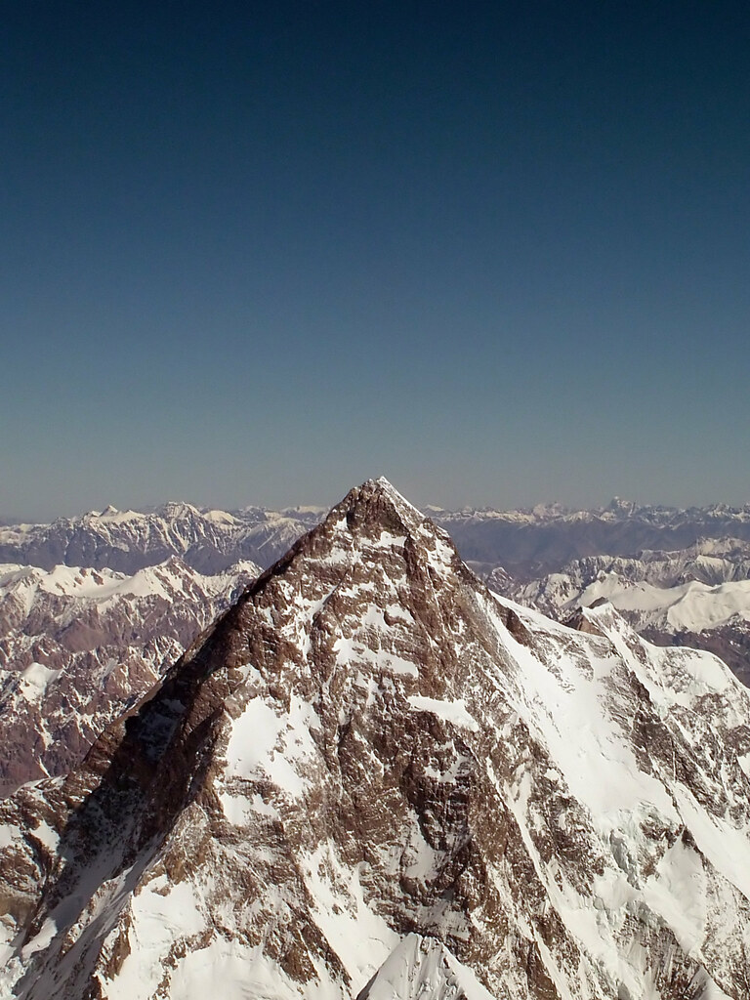
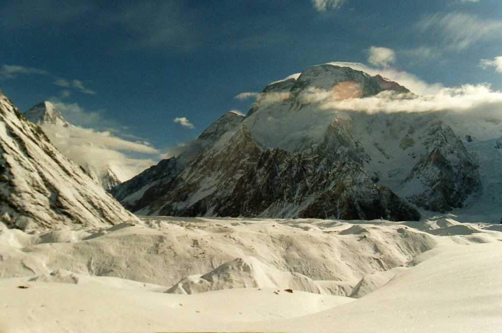

Expedition · Full logistics
ISB landing → Skardu prep → Askole → Baltoro ice → Concordia → K2 BC → return → KDU–ISB takeoff. A demanding expedition with camps, crew, permits, and weather days written in.
Camp names and day counts flex with river crossings, landslides, and health. Your final field plan is confirmed in Skardu after a crew briefing — the outline below is the operating template.

